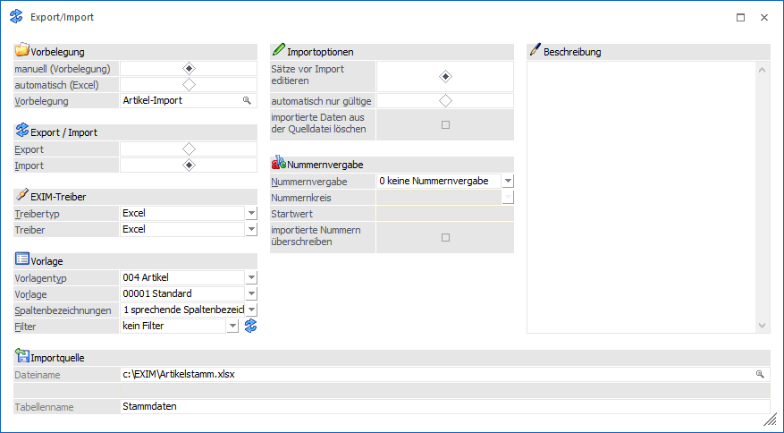
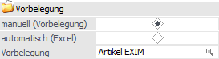
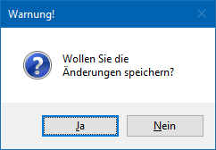
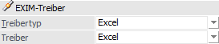
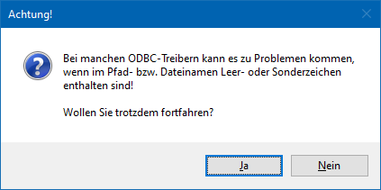
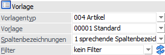
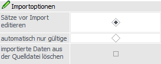
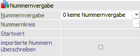
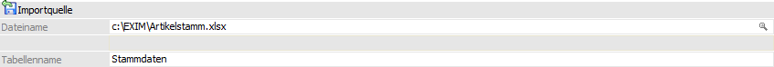
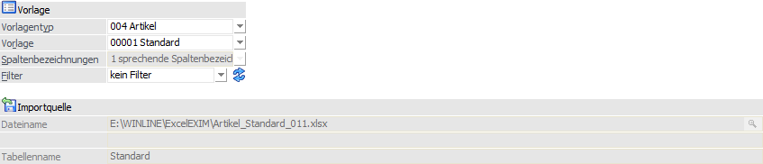

Über den Menüpunkt…
1 WinLine START
1 Vorlagen
1 EXIM
… kann das Fenster Export-/Import geöffnet werden.
Hinweis
Wurde zuvor ein Export via "automatisch (Excel)" durchgeführt, so wird die erstellte Datei geöffnet und parallel der Radiobutton bei "Export/Import" auf "Import" gesetzt, damit in Excel durchgeführte Änderungen sofort wieder importiert werden können. Zudem wird ein eventuell für den Export verwendeter Filter wieder zurückgesetzt und somit beim Import nicht verwendet.
Ebenso wird nach einem durchgeführten automatischen Import der Radiobutton wieder auf "Export" gesetzt.

Vorbelegung

Ø manuell (Vorbelegung) / automatisch (Excel)
An dieser Stelle muss zunächst die Vorbelegungsvariante definiert werden, d.h. ob ein klassisches ex- bzw. importieren von Daten gewünscht ist oder ein EXIM mit direktem Editieren.
ü manuell (Vorbelegung)
Wird
"manuell (Vorbelegung)" gewählt, so stehen alle Einstellungen und Eingabefelder
des EXIMs zur Verfügung.
ü automatisch (Excel)
Mit der
Auswahl "automatisch (Excel)" können Daten gemäß des selektierten Vorlagentyps /
der Vorlage exportiert, sofort in Excel bearbeitet und Änderungen anschließend
einfach wieder importiert werden. Hierfür werden diverse Einstellungen im
Fenster fix gesetzt und ausgegraut. Daraus ergibt sich:
ü Es kann keine Vorbelegung ausgewählt werden.
ü Der Radiobutton im Bereich "Export / Import" wird auf "Export" vorbelegt.
ü Ein Beschreibungstext erläutert die Funktion dieser Vorbelegungsart.
ü Unter "Exportziel" wird automatisch ein Verzeichnispfad und Dateiname vorgegeben.
ü Bei "Export-Selektion" wird die Anzahl betroffener Datensätze angezeigt.
Hinweis
Erfolgt der Export über die Selektion "automatisch (Excel)", so wird in Folge das entsprechende Excel-Dokument geöffnet. Weiterhin wechselt der Radiobutton im Bereich "Export/Import" anschließend auf "Import".
Ø Vorbelegung
Über die Vorbelegung können die Einstellungen eines Ex- bzw. Importvorgangs gespeichert werden. Wurde bereits eine Vorbelegung definiert, kann diese durch Drücken der F9-Taste gesucht werden. Um eine Neuanlage durchzuführen, muss lediglich eine Eingabe im Feld "Vorbelegung" getätigt werden. Die Speicherung findet automatisch bei Anwahl der F5-Taste bzw. des Buttons "Ok" statt.
Hinweis
Wird mit einer bestehenden Vorbelegung gearbeitet und der Ex- bzw. Import mit Hilfe der Taste F5 bzw. des Buttons "Ok" gestartet, erfolgt eine Sicherheitsabfrage, ob mögliche Änderungen der Einstellungen in der Vorbelegung gespeichert werden sollen.

Achtung
Eine Vorbelegung kann nur geladen und verwendet werden, wenn sowohl die Berechtigung für die Vorlage als auch ggf. für einen dort hinterlegten Filter vorhanden sind.
Export / Import

Ø Export / Import
Hier wird entschieden, ob Daten importiert oder exportiert werden sollen. Um Datensätze zu importieren, muss die Option "Import" gewählt werden.
Hinweis
Wird die Vorbelegungsvariante "automatisch (Excel)" verwendet, so wird nach einem erfolgreichen Export automatisch auf "Import" gewechselt.
EXIM-Treiber

Ø Treibertyp
Aus der Auswahlliste muss ausgewählt werden, mit welchem Treibertyp der Import durchgeführt werden soll. Hierbei stehen folgende Varianten zur Verfügung:
ü Excel
Der Import erfolgt über
eine Excel-Datei.
ü XML
Der Import erfolgt über
eine XML-Datei.
ü ODBC-Treiber
Der Import erfolgt
über einen ODBC-Treiber.
Ø Treiber
Abhängig vom Treibertyp muss hier der gewünschte Treiber gewählt werden:
ü Excel
Es steht nur der Treiber
"Excel" zur Verfügung. Hierbei handelt es sich um eine von mesonic zur Verfügung
gestellten Treibervariante.
ü XML
Bei der Ausgabe nach XML
stehen nur der Treiber "XML (Webservice)" zur Verfügung.
ü ODBC-Treiber
Bei Verwendung des
Treibertyps "ODBC-Treiber" muss an dieser Stelle die Auswahl des ODBC-Treibers
erfolgen. Dieser hat eine direkte Auswirkung auf die möglichen Eingabefelder des
Bereichs "Datenquelle".
Achtung
Die angebotenen ODBC-Treiber sind abhängig von der Installation des PCs, wobei alle vorhandenen 32-Bit ODBC-Treiber zur Verfügung stehen (mesonic ist für die Funktionsfähigkeit bzw. das Vorhandensein der Treiber nicht verantwortlich).
Hinweis
Je nachdem, welche ODBC-Treiber
verwendet werden bzw. welche ODBC-Treiber-Version verwendet wird, kann es zu
ungewünschten Verhalten des Exports bzw. Imports kommen, wenn Sonderzeichen im
Verzeichnisnamen oder im Datenbankname vorkommen. Aus diesem Grund wird, wenn
solche Sonderzeichen verwendet werden, eine entsprechende Hinweismeldung
ausgegeben:

Achtung - Treiberauswahl
Um sicherzustellen, dass Notizfelder in voller Länge importiert werden, sollte je nach verwendetem Treiber (Excel-, Access-, Text- oder SQL-Treiber) der (letzte) englische auswählbare Treiber aus der Auswahlliste verwendet werden. D.h. ist die Auswahlmöglichkeit an Treibern der Reihenfolge nach z.B. "02 - Microsoft Access Driver (*.mdb)", "10 - Microsoft Access Treiber (*.mdb)" und "16 - Driver do Microsoft Access (*.mdb)", dann sollte in diesem Fall "02 - Microsoft Access Driver (*.mdb)" selektiert werden (d.h. der englische). Andernfalls wird das Notizfeld in der Regel nur mit 255 Zeichen exportiert.
Achtung - Textdateien
Wenn ein Export von Textdateien ausgeführt wird, so wird eine SCHEMA.INI-Datei angelegt, welche die Dateibeschreibung der Exportdatei beinhaltet.
Wenn sich die Vorlage ändert, so hat dieses keine Auswirkung auf die bereits erzeugte SCHEMA.INI-Datei und es würde die Fehlermeldung "Die Tabellen existieren bereits und haben einen anderen Aufbau als die gewählte Vorlage!" ausgegeben werden. Damit der Export wieder "normal" durchgeführt werden kann, muss dieses Dokument entsprechend angepasst oder gelöscht (und damit beim nächsten Export neu angelegt) werden. Ebenso bedarf es, dass die vorhandenen Exportdateien gelöscht werden.
Vorlage

Ø Vorlagetyp
Über den Vorlagetyp wird festgelegt, für welchen Stammdatenbereich der Import erfolgen soll.
Ø Vorlage
An dieser Stelle wird die Vorlage hinterlegt, welche für den Import verwendet werden soll. Sollte mit dem Treibertyp / Treiber "Excel" gearbeitet werden, so steht zusätzlich der Eintrag "N - neue Vorlage erstellen" zur Verfügung, welcher die Anlage einer Vorlage unter Zuhilfenahme der Importdatei ermöglich.
Hinweis
Mit Hilfe der Vorlage wird definiert, welche Datenfelder in welcher Reihenfolge importiert werden sollen. Zusätzlich können Vorbelegungen hinterlegt werden.
Ø Spaltenbezeichnungen
Hier kann ausgewählt werden, wie die Spaltenbezeichnungen behandelt werden sollen:
ü 0 - numerische
Spaltenbezeichnungen
Die Datei bzw. Tabelle enthält jeweils die
Spaltenbezeichnung, wie sie auch in den Tabellen der WinLine-Datenbank
lauten.
Hinweis
Wenn Daten mit numerischen Spaltenbezeichnung importiert werden sollen, dann sollte vorher ein Test-Export durchgeführt werden. So wird bekannt, wie die einzelnen Felder benannt werden müssen.
ü 1 - sprechende
Spaltenbezeichnungen
Wird diese Einstellung gewählt, so müssen die zu
importierenden Dateien bzw. Tabellen, jeweils die Spaltenbezeichnungen
aufweisen, welche auch in der Vorlage definiert worden sind. So muss beim Import
z.B. muss darauf geachtet werden, dass die erste Spalte (dort wird der Key, z.B.
Konto- oder Artikelnummer, gespeichert) der Bezeichnung in der Vorlage
entspricht.
ü 2 - keine
Spaltenbezeichnungen
Bei dieser Variante, welche nur bei Verwendung des
Treibers "Excel" zur Verfügung steht, wird davon ausgegangen, dass keine
Spaltenüberschriftenzeile in der Importdatei existiert.
Ø Filter
Durch Auswahl eines Filters kann der Import auf bestimmte Datensätze beschränkt werden (z.B. nur Kundendaten einer bestimmten Kundengruppe importieren). In der Auswahlliste werden alle bereits angelegten Filter für den ausgewählten Stammdatentyp angezeigt.
Ø Filter bearbeiten
Mit Hilfe des Buttons "Filter bearbeiten" kann ein neuer Filter kreiert bzw. ein bestehender Filter bearbeiten werden.
Importoptionen

Ø Sätze vor Import editieren
Wird diese Option aktiviert, so können sämtliche Datensätze VOR dem endgültigen Einlesen in die WinLine-Datenbank in einer separaten Bearbeitungstabelle, der sogenannten Importvorschau, editiert bzw. kontrolliert werden.
Hinweis
Über die Spalte "Import" in der Importvorschau kann optional die Ab- und Anwahl bestimmter Datensätze erfolgen.
Ø automatisch nur gültige
Ist die Option "automatisch nur gültige" aktiviert, so werden die Datensätze sofort importiert, ohne dass die Daten zuvor in einer Bearbeitungstabelle zur Bearbeitung freigegeben werden müssen.
Hinweis
Die Daten werden beim Import automatisch nach den Gültigkeitsrichtlinien der WinLine geprüft. Alle gültigen Datensätze werden sofort importiert. Für fehlerhafte Datensätze gibt die WinLine automatisch ein Fehlerprotokoll aus. In Folge wird die Möglichkeit geboten, fehlerhafte Datensätze in einer Bearbeitungstabelle zu korrigieren (vgl. "Sätze vor Import editieren"). Nach Korrektur der Datensätze können diese sofort importiert werden.
Ø importierte Daten aus der Quelldatei löschen
Ist diese Option aktiviert, dann werden die bereits importierten Datensätze aus der Datenquelle gelöscht. Hierbei wird als "Key zum Löschen" beispielsweise die Konto-, bzw. Artikelbezeichnung herangezogen. D.h., ob ein Datensatz aus der Quelldatei gelöscht wird oder nicht, wird anhand der Konto-, bzw. Artikelbezeichnung festgestellt. Falls diese Key-Spalte in der Vorlage nicht vorhanden ist, so wird diese Funktion NICHT berücksichtigt.
Hinweise
Die Option steht nur bei der Verwendung von ODBC-Treibertypen zur Verfügung!
Nummernvergabe

Ø Nummernvergabe
An dieser Stelle muss definiert werden, welcher Key, also der eindeutige Schlüssel für den Stammdatensatz (z.B. "Kontonummer", "Artikelnummer" usw.), aus der Datei verwendet werden soll. Folgende Varianten stehen hierbei zur Verfügung:
ü 0 - Nummern werden
importiert
Die Nummern aus der Importdatei werden als Key verwendet (es sind
keine weiteren Eingaben notwendig).
ü 1 - Nummernkreis verwenden
Der
Import-Key ist der Nummernkreis, vorausgesetzt, es gibt für diesen Vorlagentyp
Nummernkreise und diese sind als Stammdaten angelegt. Der Nummernkreis kann aus
den vorhanden Stammdaten der WinLine ausgewählt werden. Es ist weiterhin möglich
"importierte Nummern überschreiben" zu wählen.
ü 2 - Hochzählen ab
Die in der
Importdatei enthaltenen Stammdaten werden anhand des hinterlegten Startwertes
hochgezählt. Es ist möglich "importierte Nummern überschreiben" zu wählen.
Beschreibung
Ø Beschreibung
Sobald eine Vorbelegungs-Bezeichnung eingegeben wird, wird die Eingabe in diesem Feld freigeschaltet und es kann ein bezugnehmender Text hinterlegt werden. Dieser wird mit der Vorbelegung gespeichert und beim erneuten Laden der Vorbelegung wieder mit angezeigt.
Importquelle

Ø Beschreibung von Datei bzw. Datenbank
Abhängig von der Vorbelegungsvariante wird in diese Felder die Importquelle vorbelegt oder kann hinterlegt werden.
ü automatisch (Excel)
Bei der
Wahl eines automatischen Imports ist der gesamte Bereich ausgegraut. In
Abhängigkeit der unter "Vorlage" selektierten Vorlage und des Vorlagentyps
bilden sich Dateiname und Tabellenname wie folgt:
ü Installationsverzeichnis der WinLine mit automatischer Angabe des Ordners "ExcelEXIM"
ü Information über den verwendeten Vorlagetypen
ü Information über die verwendete Vorlage
ü Information über den angemeldeten WinLine Benutzer inkl. der Dateiendung für das Excel-Format
ü Der Tabellenname innerhalb des Excel-Dokumentes bildet sich ebenso aus dem Namen der selektierten Vorlage.
Beispiel

Hinweis
Leerzeichen innerhalb der Formbezeichnung werden durch einen Unterstrich "_" ersetzt. Weiterhin werden die o. a. zusammengesetzten Elemente (Vorlagentyp, Vorlagenbezeichnung und Benutzer) durch einem Unterstrich getrennt. Jedes Eingabefeld kann bis zu 255 Zeichen beinhalten.
ü manuell (Vorbelegung)
In dem
vorhandenen Eingabefeld kann entweder über eine direkte Eingabe oder über das
Lupensymbol (alternativ über die F9-Taste) der Weg zum Importpfad (bzw. auch
direkt zur Import-Datei) angegeben werden. Welche Hinterlegungen genau möglich
sind, hängt von dem gewählten Treibertyp und Treiber ab.
Buttons
Ø Ok
Durch Anwahl des Buttons "Ok" bzw. der Taste F5 wird der Import gestartet. Ob dieser direkt durchgeführt wird oder zunächst die Importvorschau erscheint, ist abhängig von der hinterlegten Importvariante.
ü Option "Sätze vor Import
editieren" aktiviert
Es wird zunächst die Importvorschau geöffnet. In dieser
werden alle Datensätze des Imports angezeigt, wobei eine Prüfung und
Überarbeitung möglich ist.
ü Option "automatisch nur
gültige"
Es werden bei Anwahl des Buttons "Ok" bzw. der Taste F5 automatisch
alle Datensätze des Imports geprüft und die gültigen importiert.
Ø Ende
Durch Drücken des Buttons "Ende" bzw. der Taste ESC wird das Fenster geschlossen, alle Einstellungen verworfen und kein Import durchgeführt.
Ø Eingaben initialisieren
Durch Anklicken dieses Buttons werden alle getätigten Import-Einstellungen verworfen, wodurch eine neue Selektion durchgeführt werden kann.
Ø Exportvorschau (nur bei Export)
Durch Drücken des Buttons "Exportvorschau" werden in einem neuen Fenster die Datensätze, welche auf Grund der vorgenommenen Einstellungen exportiert werden würden, angezeigt.
Hinweis
Eine Bearbeitung der Datensätze ist nicht möglich.
Ø Zurück
Befindet man sich in der Exportvorschau oder der Importvorschau, so kann durch Anwahl des Buttons "Zurück" wieder in das Hauptfenster des EXIMs zurückgewechselt werden.